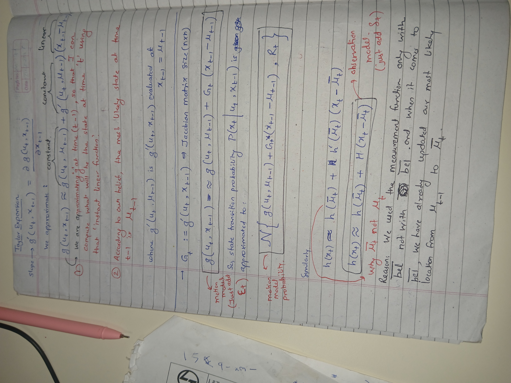
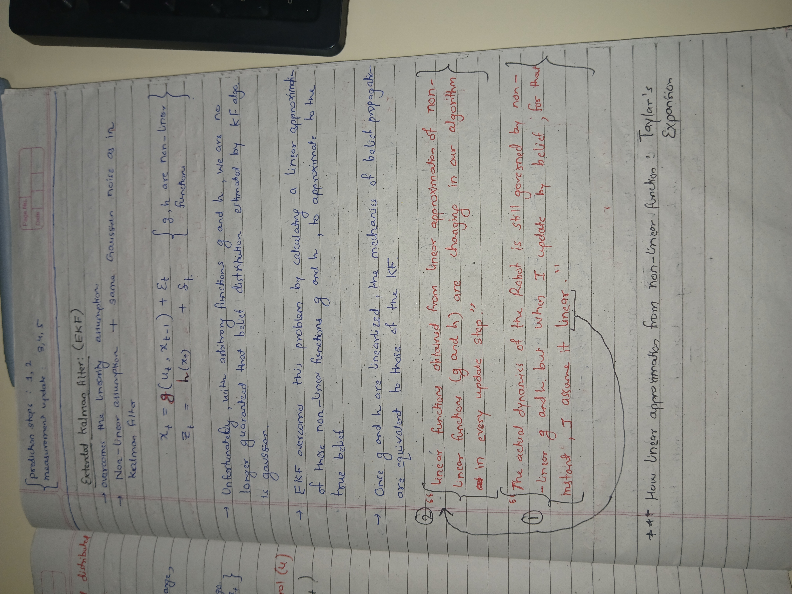
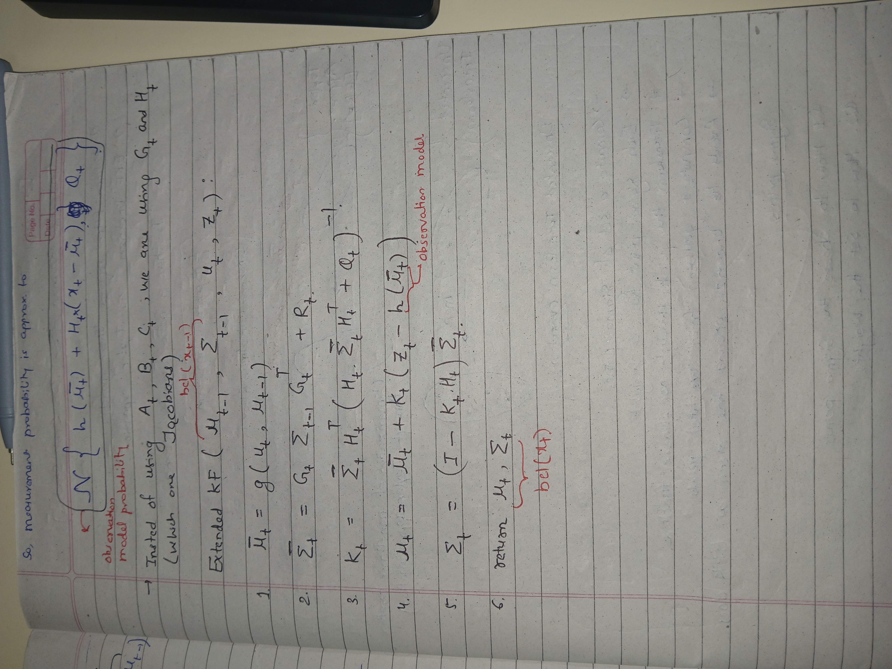
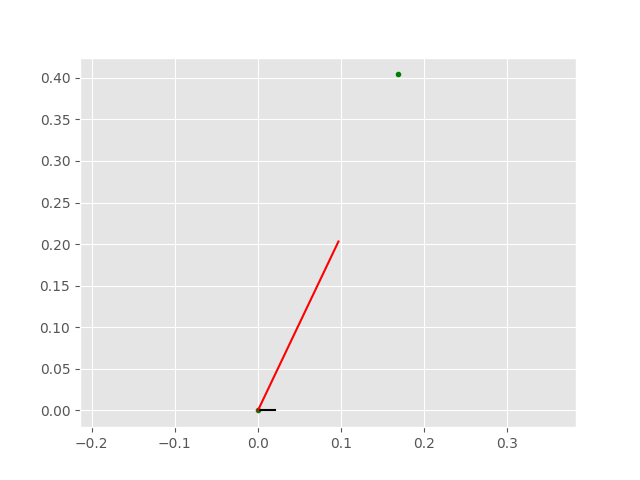
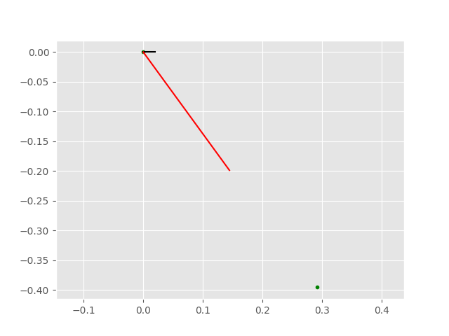
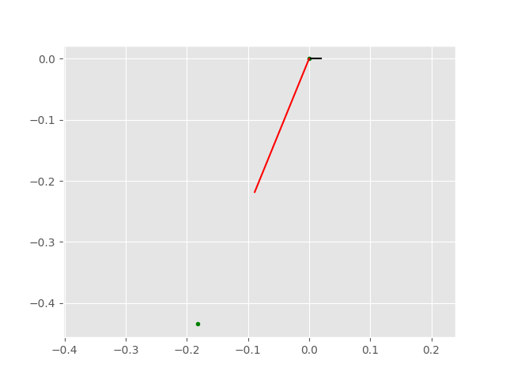

Extended Kalman Filter (EKF) Mathematical Formulation
The Extended Kalman Filter (EKF) linearizes nonlinear system dynamics around the current state estimate using a first-order Taylor series expansion (Jacobians), then applies the standard Kalman filter recursion.
1. System and Measurement Models
The system assumes a discrete-time nonlinear dynamic model with additive zero-mean Gaussian noise:
Where:
- \(x_k\): State vector at time step \(k\)
- \(u_{k-1}\): Control input vector at time step \(k-1\)
- \(z_k\): Measurement vector at time step \(k\)
- \(f(\cdot)\): Nonlinear state transition function
- \(h(\cdot)\): Nonlinear measurement mapping function
- \(w_k \sim \mathcal{N}(0,Q_k)\): Process noise with covariance \(Q_k\)
- \(v_k \sim \mathcal{N}(0,R_k)\): Measurement noise with covariance \(R_k\)
2. Linearization (Jacobian Matrices)
At each time step, the nonlinear functions are approximated using Jacobian matrices evaluated at the current state estimates.
State Transition Jacobian (\(F_k\)):
Measurement Jacobian (\(H_k\)):
3. The Recursive EKF Loop
The algorithm runs recursively in two phases: Prediction (Time Update) and Update (Measurement Correction).
Phase 1: Predict (Time Update)
Projects the state and error covariance forward in time to obtain the a priori estimates.
1. Predicted State Estimate
2. Predicted Estimate Covariance
Phase 2: Update (Measurement Correction)
Corrects the predicted state using a sensor observation to obtain the a posteriori estimates.
1. Innovation (Measurement Residual)
2. Innovation Covariance
3. Kalman Gain
4. Updated State Estimate
5. Updated Estimate Covariance
Key Notation Summary
- \(\hat{x}_{a|b}\): State estimate at step \(a\), given measurements up to step \(b\).
- \(P\): State error covariance matrix, representing estimation uncertainty.
- \(I\): Identity matrix.
- \((\cdot)^T\): Matrix transpose.
- \((\cdot)^{-1}\): Matrix inverse.
Handwritten Derivation for the Extended Kalman Filter
Handwritten mathematical notes supporting the EKF derivation.



Nonlinear Trajectory Simulation Using the Extended Kalman Filter
Animated simulation samples illustrating EKF state estimation for nonlinear trajectories.


